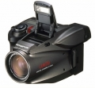
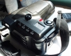

C-1400L/D-600L 采用2/3英寸CDD影像传感器，内置4MB存储空间，存储介质为记忆棒，图片以4:3比例、最近对焦距离为30CM，采用点测光模式，最高快门速度达1/1000秒。
1997年代经典，无可替代 评价某款相机要放在当时条件下，绝不能跟现代新品比
镜头一流 外形设计一流 光线好时成像佳，环境暗时噪点多
手动功能少 现代相机上的各类功能它很少
用过的第一台数码相机就是1400L，怀念啊。 现在看看介绍CCD居然是2/3的。
2/3 CCD 外形超酷
怀念
